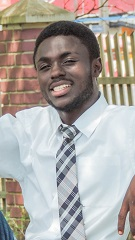

Emmanuel K.A Bonku | WDD 130
My name is Emmanuel Bonku, and I am from Ghana, West Africa. Growing up in a city known for its tech innovations and lush greenery, I have developed a unique blend of interests that span both the technological and natural worlds.
From a young age, I have been fascinated by how things work. This curiosity led me to pursue a degree in Engineering at the University . During my time at university, I have had the opportunity to work on several exciting projects, including developing a mobile app that helps users identify local plants. This project combined my love for technology and nature, providing a platform where I could explore both interests simultaneously.
Professionally, I aspire to become a software developer, specializing in creating applications that have a positive impact on the environment. My goal is to leverage technology to address environmental challenges and promote sustainable practices. I am particularly interested in working on projects related to renewable energy and conservation.
Volunteering is another important aspect of my life. I regularly participate in community clean-up events and mentor young students interested in STEM fields. Giving back to the community has been incredibly rewarding and has helped me develop strong leadership and communication skills.
In conclusion, I am a dedicated and passionate individual with a deep love for both technology and nature. I strive to make a positive impact through my professional work and personal endeavors, and I am excited about the future opportunities that lie ahead.